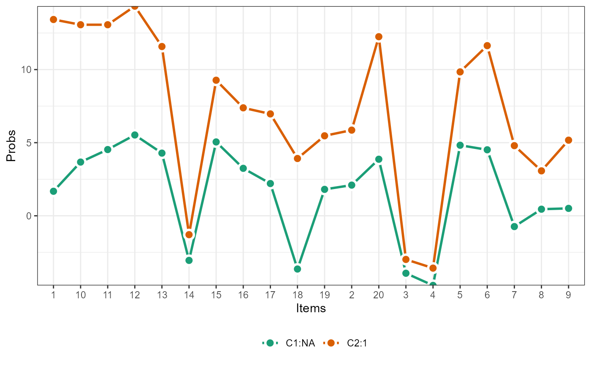

flpsMixture.Rmd
library(flps)
#> Version: 1.0.0
#>
#> It is a demo.
#> Acknowledgements. It is supported by the Institute of Education Sciences, U.S. Department of Education, through Grant R305D210036.
data(binary)
binary <- binary[c(sample(which(binary$trt == 1), 200),
sample(which(binary$trt == 0), 200)),]
res <- runFLPS(
inp_data = binary,
outcome = "Y",
trt = "trt",
covariate = c("sex","race","pretest","stdscore"),
lv_type = "lca",
lv_model = "F =~ q1 + q2 + q3 + q4 + q5 + q6 + q7 + q8 + q9 + q10",
nclass = 2,
stan_options = list(iter = 5000, cores = 1, chains = 2)
)
summary(res,type = "classprop")
#> classp
#> C1 C2
#> 306 694
flps_plot(res,type = "profile")
summary(res,type = "causal")
#> mean se_mean sd 2.5% 25% 50%
#> tau0[1] -0.97110443 0.003699360 0.10703598 -1.175523442 -1.04235386 -0.97460941
#> tau0[2] -1.36827333 0.003633687 0.10962353 -1.580736339 -1.44140305 -1.36955692
#> tau1[1] 0.17263774 0.002310274 0.09473743 -0.006340285 0.10745083 0.17213108
#> tau1[2] -0.05489383 0.001289748 0.05572697 -0.168410929 -0.09096321 -0.05273357
#> 75% 97.5% n_eff Rhat
#> tau0[1] -0.90334095 -0.75559665 837.1561 1.0002053
#> tau0[2] -1.29875761 -1.14158502 910.1490 0.9999325
#> tau1[1] 0.23358084 0.36991112 1681.5743 0.9997092
#> tau1[2] -0.01850267 0.05152358 1866.9011 0.9996086
flps_plot(res,type = "causal")
data(continuous)
continuous <- continuous[c(sample(which(continuous$trt == 1), 500),
sample(which(continuous$trt == 0), 500)),]
res <- runFLPS(
inp_data = continuous,
outcome = "Y",
trt = "trt",
covariate = c("sex","race","pretest","stdscore"),
lv_type = "lpa",
lv_model = "F =~ q1 + q2 + q3 + q4 + q5 + q6 + q7 + q8 + q9 + q10",
nclass = 2,
stan_options = list(iter = 5000, cores = 1, chains = 2)
)
summary(res,type = "classprop")
#> classp
#> C2
#> 1000
flps_plot(res,type = "profile")
summary(res,type = "causal")
#> mean se_mean sd 2.5% 25% 50%
#> tau0[1] -0.988596124 0.24559423 0.54101321 -1.5892444 -1.43209271 -1.3158235364
#> tau0[2] -0.979198979 0.06388208 0.15470235 -1.2587917 -1.11888637 -0.9405048631
#> tau1[1] 0.151535641 0.10277767 0.26756538 -0.3970008 -0.05717985 0.2363699003
#> tau1[2] 0.002453752 0.01615429 0.05496201 -0.1002659 -0.03606451 0.0004410687
#> 75% 97.5% n_eff Rhat
#> tau0[1] -0.37972470 -0.09101688 4.852655 0.9999959
#> tau0[2] -0.85451272 -0.73751029 5.864564 1.0000767
#> tau1[1] 0.35573060 0.52997234 6.777387 0.9997000
#> tau1[2] 0.04161402 0.10911867 11.575762 0.9997540
flps_plot(res,type = "causal")